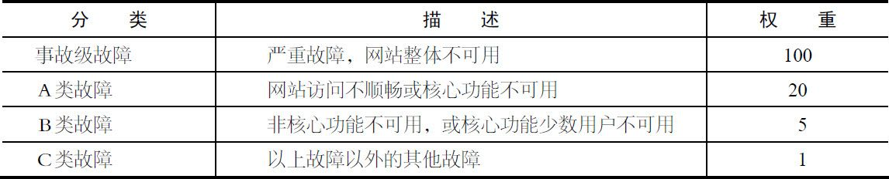

网站的页面能完整呈现在最终用户面前，需要经过很多个环节，任何一个环节出了问题，都可能导致网站页面不可访问。DNS会被劫持、CDN服务可能会挂掉、网站服务器可能会宕机、网络交换机可能会失效、硬盘会损坏、网卡会松掉、甚至机房会停电、空调会失灵、程序会有Bug、黑客会攻击、促销会引来大量访问、第三方合作伙伴的服务会不可用……要保证一个网站永远完全可用几乎是一件不可能完成的使命。
网站不可用也被称作网站故障，业界通常用多少个9来衡量网站的可用性，如QQ的可用性是4个9，即QQ服务99.99％可用，这意味着QQ服务要保证其在所有运行时间中，只有0.01％的时间不可用，也就是一年中大约最多53分钟不可用。
网站不可用时间（故障时间）＝故障修复时间点网故障发现（报告）时间点
网站年度可用性指标＝（11网站不可用时间/年度总时间）年100％
对于大多数网站而言，2个9是基本可用，网站年度不可用时间小于88小时；3个9是较高可用，网站年度不可用时间小于9小时；4个9是具有自动恢复能力的高可用，网站年度不可用时间小于53分钟；5个9是极高可用性，网站年度不可用时间小于5分钟。
由于可用性影响因素很多，对于网站整体而言，达到4个9，乃至5个9的可用性，除了过硬的技术、大量的设备资金投入和工程师的责任心，还要有个好运气。
常使用Twitter的用户或多或少遇到过那个著名的服务不可用的鲸鱼页面，事实上，Twitter网站的可用性不足2个9。
可用性指标是网站架构设计的重要指标，对外是服务承诺，对内是考核指标。从管理层面，可用性指标是网站或者产品的整体考核指标，具体到每个工程师的考核，更多的是使用故障分。
所谓故障分是指对网站故障进行分类加权计算故障责任的方法。表5.1为某网站故障分类权重表。
表5.1 网站故障分类权重表示例
故障分的计算公式为：
故障分＝故障时间（分钟）（ 故障权重
在年初或者考核季度的开始，会根据网站产品的可用性指标计算总的故障分，然后根据团队和个人的职责角色分摊故障分，这个可用性指标和故障分是管理预期。在实际发生故障的时候，根据故障分类和责任划分将故障产生的故障分分配给责任者承担。等年末或者考核季度末的时候，个人及团队实际承担的故障分如果超过了年初分摊的故障分，绩效考核就会受到影响。
一个简化的故障处理流程如图5.1所示。
图5.1 网站故障处理流程示例
有时候一个故障责任可能由多个部门或团队来承担，故障分也会相应按责任分摊到不同的团队和个人。
不同于其他架构指标，网站可用性更加看得见摸得着，跟技术、运营、相关各方的绩效考核息息相关，因此在架构设计与评审会议上，关于系统可用性的讨论与争执总是最花费时间与精力的部分。
当然，不同的公司有不同的企业文化和市场策略，这些因素也会影响到系统可用性的架构决策，崇尚创新和风险的企业会对可用性要求稍低一些；业务快速增长的网站忙于应对指数级增长的用户，也会降低可用性的标准；服务于收费用户的网站则会比服务于免费用户的网站对可用性更加敏感，服务不可用或关键用户数据丢失可能会导致收费用户的投诉甚至引来官司。